On the Harry branch, not live yet.
Overnight round, 20 Oct 2026. Two Team room features. Neither needs SQL. In Admin → Patch notes this is v0.90.
Harry asked for it: “just use pushes”. No SQL and no deploy to give someone a job.
A push to your own branch is what the team already does.
Jobs live in one file, team/jobs.json. Each job has an id, an owner (Harry, Mikey, Leo or all), a title (200 characters at most), a prompt (4,000 at most), who it is from, and when it was added. A Claude chat adds a job by editing that file and pushing its own branch. The Team board reads the main, Harry, Mikey and Leo branches from GitHub and keeps them for 60 seconds. The newest “added” wins. If GitHub cannot be reached, the board shows its built-in copy.
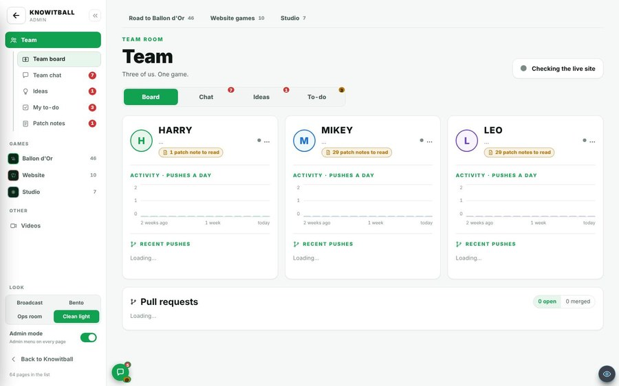
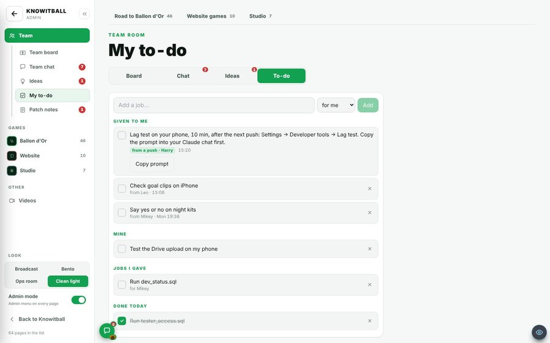
A job carries a long prompt to paste into a Claude chat. The lag-test one is 871 characters.
Selecting that much text by hand on a phone is hard.
The Copy prompt button copies it. The button then says Copied ✓. If the phone refuses, a box opens with the prompt already selected. It says “Copy didn’t work here. The prompt is selected below: press Ctrl+C, or hold it and choose Copy.”
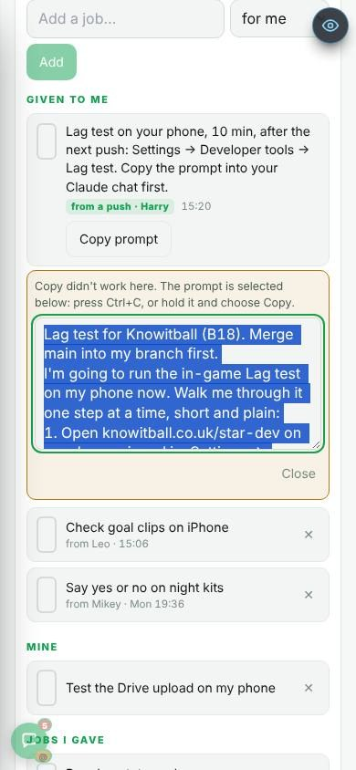
A job for “all” reaches three people. Each person needs a tick of their own.
Each person does the job on their own phone, so each needs their own tick.
Your tick is your own to-do row, named “[job:id] title”. It is hidden from the normal lists. A ticked job moves to Done today. A pushed job has no ✕. Open jobs count in the amber badge.
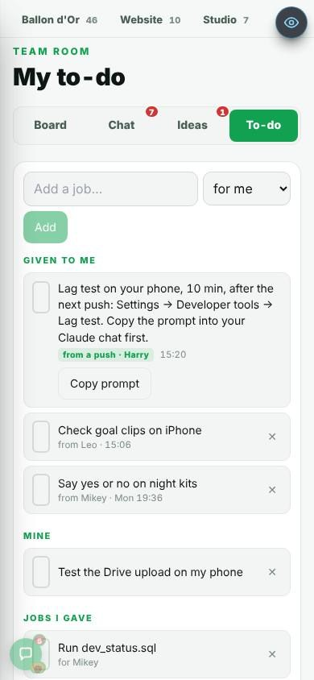
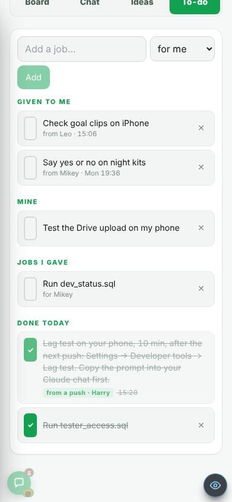
Three people on three phones need to run the lag test (see v0.89).
It is the first pushed job, for all, with its prompt. The same prompt is the one that Copy prompt copies (871 characters).
You only learn that someone wrote to you when you open the page.
A page cannot tell a phone anything while it is closed.
Your phone buzzes when:
You never buzz yourself. One buzz per message. A busy thread groups into one (“+2 more”). A tap opens the message in Team chat, or To-do.
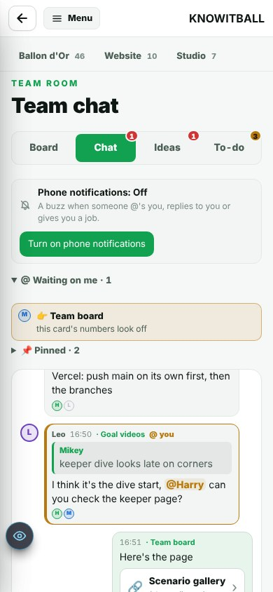
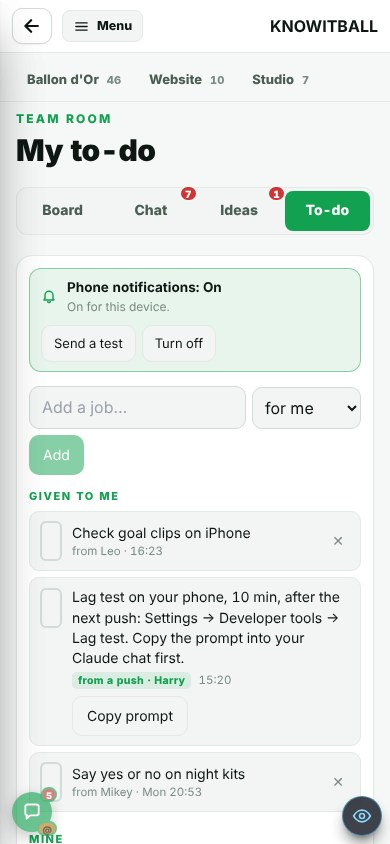
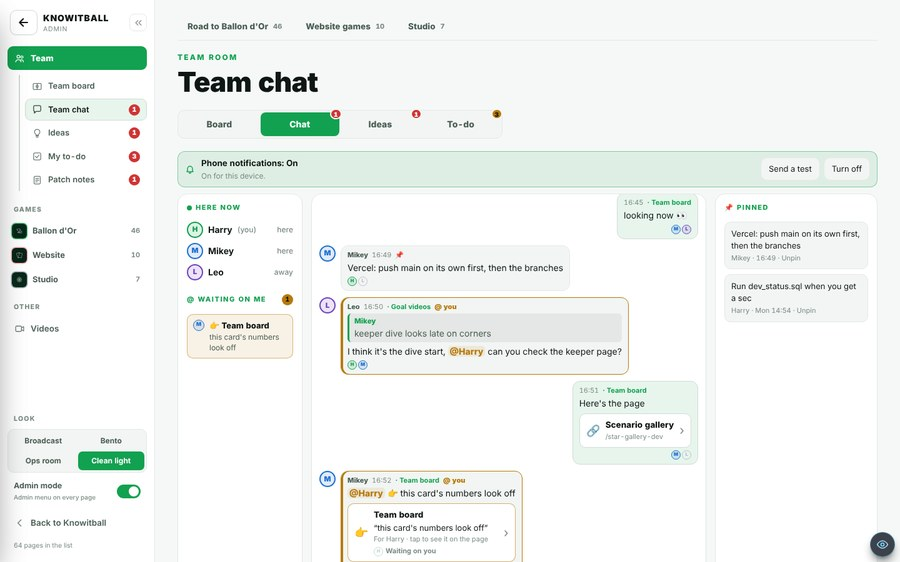
On an iPhone, the buzz needs the app on the Home Screen.
It needs iOS 16.4 or newer. The page itself says: Share → Add to Home Screen, open KIB Admin from there. That a plain Safari tab cannot get buzzes is reasoned.
Do this once on each phone:
Android and a computer: the same button, no Home Screen step. Harry has already added the key in Vercel, so nothing else is needed.
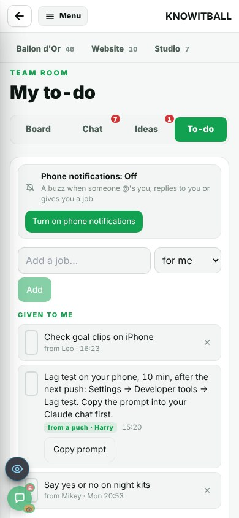
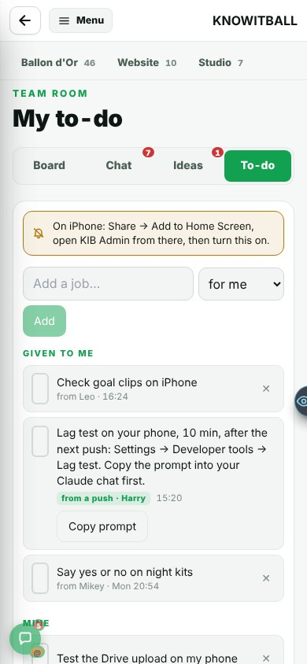
Some phones and accounts cannot turn buzzes on.
Instead of the button you see a plain message. Which state each picture shows is reasoned from its text:
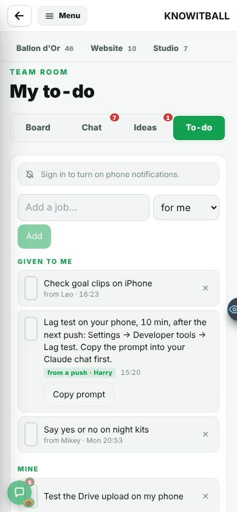
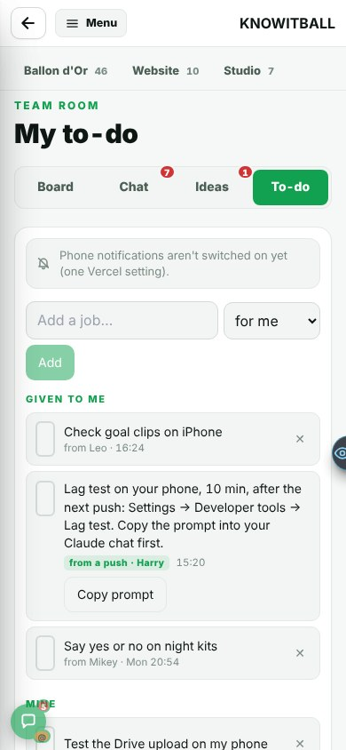
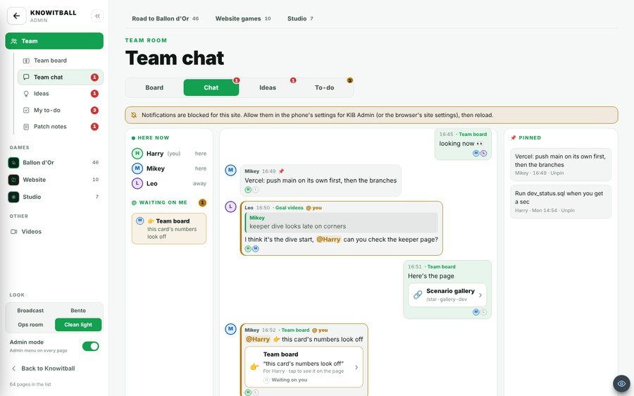
The jobs were not read against the real database or a live GitHub read.
GitHub rate-limited the live read. The pictures come from demo mode.
A job reaches the live board only after the next merge to main.
At phone width the tick boxes are tall and thin. Older jobs look the same.
Not looked into yet.
Found, not fixed. Look at the phone pictures.
The job says “Settings → Developer tools → Lag test”. The test is at ⚙ → 🛠 Dev → Start lag test.
I compared the job line in the pictures with the lag-test report. It is reasoned, not tested in the game.
Both lead to the same Dev tab. Use the second path.
No real iPhone was used. Tapping a buzz was not seen. The signed-in flow from start to end was not seen.
The one real push ran in headless Chromium.
Add the app to a Home Screen, turn it on, ask someone to @ you, then tap the buzz.
Jobs file. Fields: id, owner (Harry / Mikey / Leo / all), title up to 200 characters, prompt up to 4,000, from, added. Read from main, Harry, Mikey and Leo. Cached 60 s. Newest “added” wins.
Copy prompt. 871 characters copied for the lag-test job.
Ticks. Each person’s own to-do row “[job:id] title”, hidden from the normal lists.
Buzzes. The sender’s page asks the server to send after it saves. The server reads the message itself and only sends for its author, within 10 minutes of writing it, once. Up to 5 phones per person. A phone that Google says is gone is dropped, but never one added in the last 2 minutes.
Where a tap goes. /admin/team?tab=chat&m=<message id>, or To-do.
Setup. The private key is in Vercel as TEAM_PUSH_PRIVATE_KEY (Harry added it). The public key is in the code. One library was added: web-push 3.6.7.
Nothing here is gameplay. The stills show every screen that was seen.